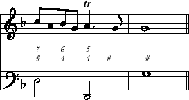

Next: Scores Up: abctab2ps User's Guide Previous: Music Contents Index
\'eacute accent: é \`egrave accent: è \^ecircumflex accent: ê \"edieresis: ë \sssz (obsolete): ß \o \Oo slash: ø Ø \aa \AAa ring: å Å \ae \AEae ligatura: æ Æ \cc \cCc cedilla: ç Ç \~n \~Nn twiddle: ñ Ñ
Figured bass notation can also be achieved with the guitar chord
notation. In order to stack figures, you can use the escape sequence
\n for line breaks, eg. ""6\n4"".
Currently up to eight line breaks are supported, which should
be sufficient for all practical purposes. Please note, that abctab2ps
does not automatically add vertical space for guitar chords with
an insane number of line breaks; if the figures interfere
with the preceding stave, you can add extra space with the voice
parameter space.
It is possible to have more than one guitar chord over one note. In that case the guitar chords are equally spaced over the width of the note. This is useful for harmony changes over a long note, as in the following example:
V:1 clef=treble |
c/A/B/G/ TA>G | G4 || |
V:2 clef=bass |
"7\n#""6\n4"d2 "5\n4""#"D2 | "#"g4 || |
|  |
Accidentals in guitar chords can be achieved with the backslash
sequences "\#" (sharp), "\b" (flat) and
"\=" (natural). Beware that the natural sign is ambiguous
in figured bass notation and is avoided in most historic sources.
It is better to always use flat for a minor interval and
sharp for a major interval; this makes sure that the
figures remain valid in case of transposition.
If you do not like the default gchordfont Helvetica, you can set it with %%gchordfont. A nice font for continuo figures is ZapfChancery-MediumItalic.
Bar labels like large letters A, B, C...
usually mark specific points in the music. They are coded in
a syntax similar to guitar chords, but placed before
a bar line instead of a note or rest. For instance
"| abcd "A"| ABCD |"
places the letter A over the second bar line.
Just in case somebody wants a label on the first bar
(which is often not preceded by a bar line), the
symbol [|] means an invisible bar line. When a label is on the last
bar in a line, it is moved to the beginning of the next line.
Although bar numbers can also be written manually over bar lines, it is more convenient to use abctab2ps' command line option -k or the pseudocomment %%barnumbers for automatic bar numbering.
Decoration signs are also allowed on bar lines. Although this does not make much sense for decorations like !trill! or !mordent! it is useful for !segno! and !coda!.
edc2 edc2 | w: Three blind mice, three blind miceEach blank-delimited word in the w: line is associated with one note, in sequence. The following special symbols are available to modify this behaviour:
For more than one line of lyrics, just use several w: lines. To draw a '-' without breaking the word there, escape it as "
*skips one note (melisma) -split a word into two syllables, associated with two notes, with '-' drawn between them |tabs forward to the next bar line. ~is drawn as a space, but contracts words to be written under one note. That is, " hey~ho" gives two words under one note._draws a thin underscore from the previous note to this one.
\-".
Note that "\\" in the abc music line defines a
staff break. This is
useful when typesetting vocals, because it is tedious to split
the line explicitly when shifting a staff break about when there
are lines with vocals.
If a word starts with a digit, this is interpreted as numbering of a
stanza and is pushed forward a bit. In other words, use something like
"w: 1.~~Three blind mice"
to put a number before "Three".
%%text This text line is left aligned. %%center This text line is centered. %%right This text line is right aligned.writes one line into the output. The alignment is given by the pseudo comment.
%%begintext %%First line of text %%Second line %%And yet another line. %%endtextwill write a block of several lines. To avoid conflict with other programs, the text lines themselves are (optionally) prefaced with %%.
The statement "%%begintext" may have a parameter to determine how the output is done, namely:
For "ragged" and "align", the program has to estimate the number of lines needed in the current font, since the typesetting is done using the Postscript "widthshow" operator by the printer. The estimate should be reasonably reliable for Times-Roman, but might be more dodgy for some other fonts. Also, note that the Ghostview fonts can be quite different than the fonts used by the printer. Strangely, a 13pt font can be smaller than a 12pt font.
%%begintext obeylines keeps lines as they are (default) %%begintext ragged puts in own line breaks to fill the line %%begintext align puts in own breaks and aligns right margin %%begintext skip skips the whole block, no output
An empty line in a block ends a paragraph (see parskipfac below).
In any case, \\ can be used in a line of text to
add line breaks. Thus, two centred lines result from this:
%%center First line\\second lineAs with the other pseudo comments (see section Format fine tuning), the text is associated with a specific tune if it is within that tune's block. In that case, it will only be printed if that tune is selected. If the text is outside all tune blocks, it will always be printed. The exception is if the command line flag -E is used to to make a separate EPS file for each tune. In this case all text outside the blocks is ignored.
To learn how the font for text output is changed, see the section Format fine tuning.